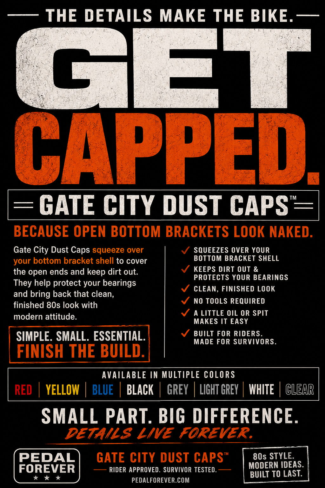
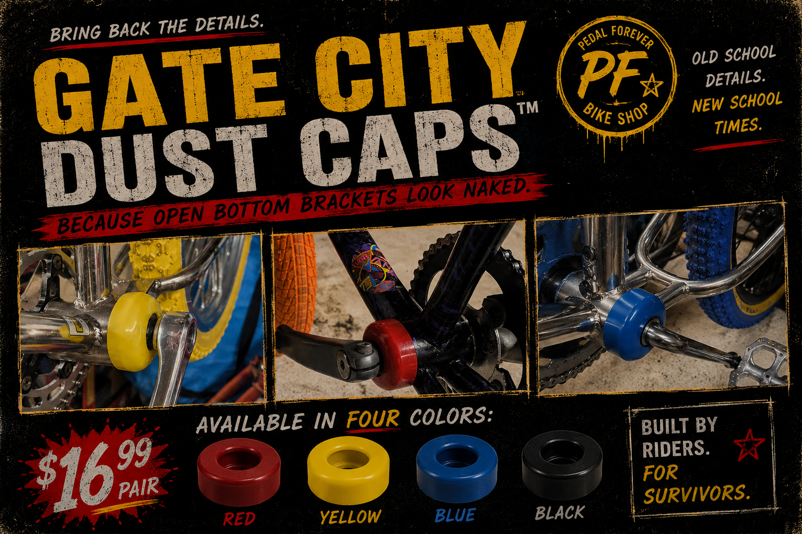

BUY NOW " class="button"> GET CAPPED — $16.99Open bottom brackets look unfinished. Gate City Dust Caps squeeze over your bottom bracket shell to help protect bearings, keep dirt out, and bring back that clean finished BMX look.
Designed by a BMX dad. Made in-house inside the Pedal Forever basement. Built by riders. Made for survivors.
Simple. Small. Essential.
Finish the build correctly.

FINISH THE BUILDAvailable in: Red, Yellow, Blue, Black, Grey, Light Grey, White, and Clear.